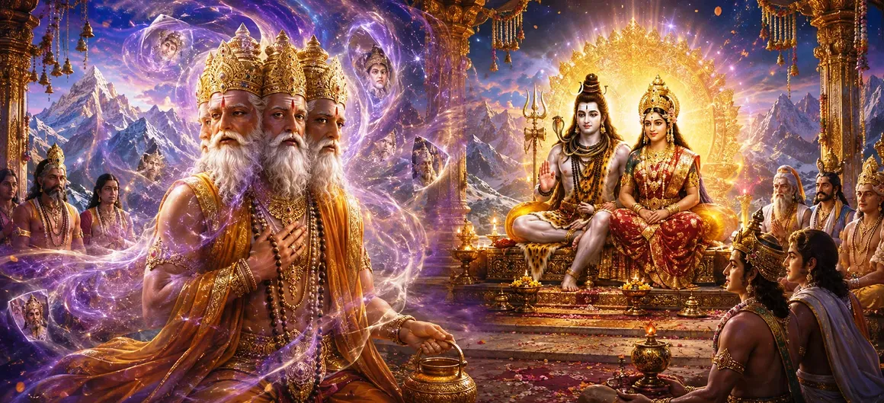

भगवान शिव और देवी पार्वती के भव्य विवाह के बाद, दिव्य उत्सव अद्वितीय महिमा के साथ जारी रहा। देवताओं, ऋषियों, गंधर्वों और स्वर्गीय प्राणियों ने दिव्य मिलन का आनंद उठाया। फिर भी इन उत्सवों के बीच, भगवान ब्रह्मा से जुड़ी एक अप्रत्याशित घटना घटी, जिसने दिव्य माया की शक्ति और सर्वोच्च के समक्ष विनम्रता की आवश्यकता के बारे में गहन सत्य प्रकट किया।
दिव्य विवाह ने तीनों लोकों को आनंद से भर दिया था। हर दिशा में पवित्र भजन गूँज रहे थे, आकाश से दिव्य फूल उतर रहे थे और नव संयुक्त दिव्य जोड़े को अनगिनत आशीर्वाद दिए जा रहे थे। माहौल भक्ति और खुशी से सराबोर था।
ब्रह्माण्ड के निर्माता, भगवान ब्रह्मा, एकत्रित देवताओं के बीच उपस्थित थे। प्रमुख देवताओं में से एक के रूप में, उन्होंने पवित्र समारोहों में भाग लिया और प्रशंसा और श्रद्धा के साथ दिव्य कार्यवाहियों को देखा।
यहां तक कि महानतम प्राणी भी ईश्वर की इच्छा होने पर दैवीय माया के प्रभाव से पूरी तरह परे नहीं हैं। उत्सव के दौरान, ब्रह्मा एक सूक्ष्म भ्रम से क्षण भर के लिए प्रभावित हो गए, जिससे पता चला कि सभी प्राणी दैवीय कृपा पर निर्भर रहते हैं।
भ्रम द्वेष से नहीं बल्कि ब्रह्मांडीय भ्रम की रहस्यमय कार्यप्रणाली से उत्पन्न हुआ। एक संक्षिप्त क्षण के लिए, ब्रह्मा का निर्णय धूमिल हो गया, और उपस्थित सभी लोगों को याद दिलाया कि घमंड और व्याकुलता अत्यधिक ऊंचे प्राणियों को भी प्रभावित कर सकती है।
एकत्रित देवताओं ने आश्चर्य से इस घटना को देखा। वे समझ गए कि इस घटना में गहरे सबक छिपे हुए हैं और भगवान शिव जल्द ही इस घटना के पीछे के आध्यात्मिक महत्व को प्रकट करेंगे।
ईश्वरीय माया महानतम प्राणियों को भी प्रभावित कर सकती है।
सच्चे ज्ञान के लिए निरंतर विनम्रता और समर्पण की आवश्यकता होती है।
दैवीय घटनाओं में अक्सर दिखावे से परे गहरे अर्थ होते हैं।
ब्रह्मा से जुड़ी घटना केवल एक त्रुटि नहीं थी बल्कि सभी प्राणियों के लिए एक आध्यात्मिक सबक थी। इसने प्रदर्शित किया कि कोई भी पद, शक्ति या ज्ञान अकेले सर्वोच्च भगवान की निरंतर कृपा के बिना किसी को भ्रम से नहीं बचा सकता है।
विनम्रता ज्ञान की सुरक्षा है. महान आत्माएँ भी तभी सुरक्षित रहती हैं जब वे सच्चे मन से ईश्वर का स्मरण करते हैं। ब्रह्मा की कहानी हमें याद दिलाती है कि आध्यात्मिक प्रगति के लिए ज्ञान और विनम्रता दोनों की आवश्यकता होती है।
हालाँकि इस घटना से अप्रसन्न होकर भगवान शिव ने अंततः दया प्रदर्शित की। परमेश्वर केवल क्रोध के कारण नहीं बल्कि सभी प्राणियों के उत्थान और शुद्धिकरण के लिए त्रुटियों को सुधारते हैं।
एक बार जब भ्रम दूर हो गया और क्षमा प्रदान कर दी गई, तो देवताओं के बीच सद्भाव लौट आया। दिव्य उत्सव फिर से शुरू हो गए, और पवित्र विवाह उत्सव नए आनंद और भक्ति के साथ जारी रहा।
"यहां तक कि सबसे बुद्धिमान व्यक्ति भी भ्रम में लड़खड़ा सकता है, लेकिन सच्चा पश्चाताप और दैवीय कृपा धर्म का मार्ग बहाल करती है।"
पवित्र विवाह समारोहों के बाद, एक अप्रत्याशित घटना सामने आई जब ब्रह्मा दिव्य माया से प्रभावित हो गए। हालाँकि पश्चाताप और शिव की करुणा से अशांति का समाधान हो गया, फिर भी दिव्य विवाह का उत्सव जारी है। शिव और पार्वती के विवाह के बाद हुए आनंदमय उत्सवों, आशीर्वादों और दिव्य खुशियों को देखने के लिए अगले अध्याय की ओर आगे बढ़ें।